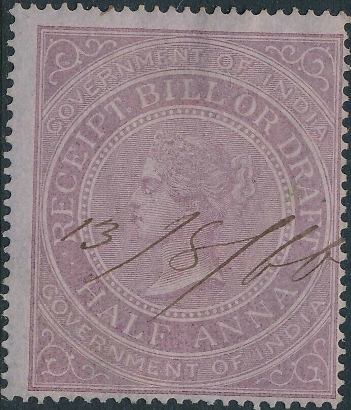
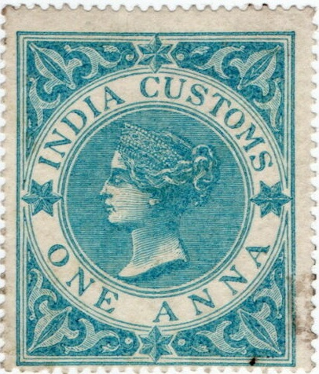
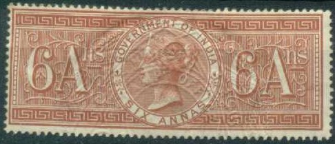
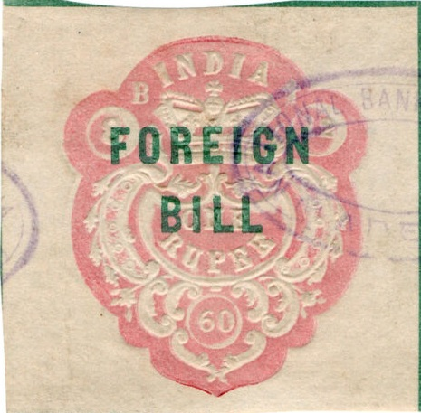
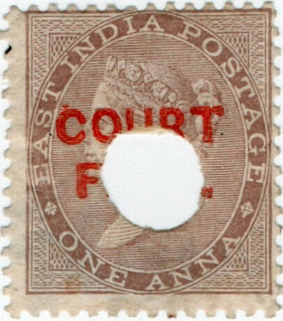
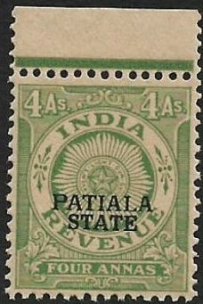
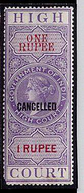
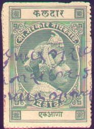
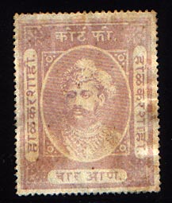

{kind=link}

.{kind=link}

Return To Catalogue - India - Special Adhesives - Receipt, Bill of Draft, Customs - fiscal stamps, embossed type - Court Fees, provisional issues - Court Fees definitive issue and Court Fee Service - Small Cause Court - Foreign Bill, High Court, Notarial, Petition, Share Transfer - Indian States, fiscal stamps, part 1 - Indian States, fiscal stamps, part 2
Note: on my website many of the
pictures can not be seen! They are of course present in the
catalogue;
contact me if you want to purchase it.


Example of the embossed type

Postage stamps with overprint "COURT FEES" and with or
without "SERVICE" with or without bar are fiscal stamps
General design, 3 sizes (larger values are larger), inscription at the bottom different
"FOREIGN BILL": 2 a, 3 a, 4 a, 6 a, 8 a, 12 a green (text blue),
1 R, 3 R, 6 R lilac (text red)
"SHARE TRANSFER": 2 a, 4 a, 8 a, 12 a green (text red), 1 R, 3 R, 6 R lilac (text blue)
"SPECIAL ADHESIVE": 2 a, 3 a, 4 a, 6 a, 8 a green, 12 a (text brown),
1 R, 2 R, 3 R, 4 R, 5 R, 6 R, 7 R, 8 R, 9 R, 10 R lilac (text green);
20 R, 30 R, 40 R, 50 R, 100 R, 200 R, 500 R, 1000 R green (text brown).
Foreign Bill with further "NOTORIAL" overprint.
Overprints: "BROKER'S NOTE" on "SPECIAL ADHESIVE" (1910): 4 a, 8 a green and brown text, and 1 R lilac and green (overprint in black) "NOTARIAL" on "FOREIGN BILL" 1 R lilac with red text (overprint in black)
"ADEN REVENUE" (1937?) 2 a, 3 a, 4 a, 6 a, 8 a, 12 a green with black text
1 R, 2 R, 3 R, 4 R, 5 R, 10 R lilac with black text
"AGREEMENT" (1923): 2 a, 3 a ,4 a, 6 a, 8 a 12 a green with blue (or black?) text
1 R, 2 R lilac with red text
"BROKER'S NOTE" (1923): 2 a, 3 a, 4 a, 6 a, 8 a, 12 a: green with green text (also brown with green text?)
1 R, 5 R: brown with green text
I've seen the 2 a with "BOMBAY PROVINCE" overprint (in black)
"CONSULAR" (1937): 10 R blue with black text
"FOREIGN BILL" (1923): 2 a, 3 a, 4 a, 6 a, 8 a, 12 a green (text blue),
1 R, 2 R, 3 R, 6 R lilac (text red)
I've seen the 8 a, 1 R, 2 R with "BOMBAY PROVINCE" overprint
"HIGH COURT NOTARIAL" (1926) 1 R, 2 R lilac with black text
"INSURANCE" (1923): 2 a , 3 a, 4 a, 6 a, 8 a, 12 a: green and black (1923) or blue (1926) text;
1 R, 3 R, 6 R, 10 R, all lilac and black (1923) or blue (1926) text
"SHARE TRANSFER" (1923): 2 a, 4 a, 8 a, 12 a green with red text
1R, 5 R, 10 R lilac with blue text
I've seen the 4 a, 8 a and 5 R with "BOMBAY PROVINCE" overprint
"SPECIAL ADHESIVE" (1914): 2 a, 3 a, 4 a, 6 a, 8 a, 12 a, all green with brown text;
1 R, 2 R, 3 R, 4 R, 5 R, 6 R, 7 R, 8 R, 9 R, 10 R, all lilac with green text;
20 R, 30 R, 40 R, 50 R, 100 R, 200 R, 500 R, 1000 R all green with brown text
I've seen the 8 a, 30 R with "BOMBAY PROVINCE" overprint in black
"ADEN" on "NOTARIAL" (1937?) 2 R lilac with black text
"BOMBAY REVENUE": 1 a on 2 a
"BROKER'S NOTE" overprint on "SPECIAL ADHESIVE" (1912): 2 a, 3 a, 4 a, 8 a all green and brown text (black overprint)
"NOTARIAL" on "FOREIGN BILL" (1923): 1 R, 2 R (black overprint)
"INSURANCE" twice vertically and two black bars on "SPECIAL ADHESIVE" stamps:
2 a, 3 a, 4 a, 6 a, 8 a, 12 a green with brown text;
1 R 3 R, 10 R lilac with black text
"INSURANCE" once vertically and black squares at the bottom on "SHARE TRANSFER": 1 R
"NOTARIAL" and black bars on "FOREIGN BILL" (1923): 1 R, 2 R (black overprint),
1 1/2 R on 2 R (see image above)
"SHARE TRANSFER" and black bars on "SPCIAL ADHESIVE":
2 a green with brown text, 10 R lilac with green text, "5 Rs." on 6 a green with brown text
"SPECIAL ADHESIVE" and black bar on "AGREEMENT": 6 a
"SPECIAL ADHESIVE" and black bar on "INSURANCE": 3 R, 10 R lilac with blue text
"SPECIAL ADHESIVE" (1929?) and black bars on "SHARE TRANSFER" 1 R lilac with blue text
"ADEN REVENUE" (1945? for Aden) 2 a, 4 a, 8 a, 12 a lilac with black text 1 R, 2 R, 3 R, 4 R, 5 R, 10 R blue with black text "BROKER'S NOTE" (1937): 2 a, 3 a , 4 a brown and blue text; 1 R blue and black text I've seen the 4 a with "BOMBAY PROVINCE" overprint (in black) "CUSTODIAN'S FEE": 2 a lilac and black, 8 a lilac and black, 1 R blue and black, 2 R blue and black "FOREIGN BILL": 2 a, 3 a, 4 a, 6 a, 8 a, 12 a lilac (text blue), 1 R, 3 R, 6 R blue (text black) I've seen the 3 R, 6 R with "BOMBAY PROVINCE" overprint (in black) "HIGH COURT NOTARIAL": 2 R blue I've seen the 6 R value with "BOMBAY PROVINCE" overprint in black "INSURANCE" (1937): 2 a, 3 a, 4 a, 6 a, 8 a, 12 a lilac with blue text 1 R, 3 R, 10 R blue with black text I've seen the 3 a, 6 a, 12 a with "BOMBAY PROVINCE" overprint I've seen the 1 R with "BOMBAY STATE" overprint "NOTARIAL" (1937): 1 R, 1 R 8 a, 2 R, 3 R blue with black text "Re 1-8" and black bars on 2 R blue with black text "SHARE TRANSFER" (1937) 2 a, 4 a, 8 a lilac with blue text 1 R, 5 R, 10 R blue with black text I've seen the 2 a, 4 a, 8 a, 12 a, 1 R, 5 R, 10 R with overprint "BOMBAY PROVINCE" in black I've seen the 2 a with oveprint "BOMBAY STATE" in black "SPECIAL ADHESIVE" (1937): 2 a, 3 a, 4 a, 6 a, 8 a, 12 a brown with blue text 1 R, 2 R, 3 R, 4 R, 5 R, 6 R, 8 R, 9 R, 10 R blue with black text 20 R, 30 R, 40 R, 50 R, 100 R, 200 R, 500 R, 1000 R green with brown text I've seen the 4 a, 6 a and 3 R with "BOMBAY STATE" overprint I've seen the 4 a, 1 R and 100 R with "BOMBAY PROVINCE" overprint
King George V, inscription "GOVERNMENT OF BOMBAY
ENTERTAINMENT" with "SPECIAL ADHESIVE " overprint
"FOUR RUPPES" on ? brown and blue. Also "INSURANCE
ONE RUPEE" on the same stamp of Bombay.
Later issues:
Some more recent revenue stamps. Stamps in these designs exist
with "MAHARASHTRA", "SERAIKELA STATE" or
"U.P." (for Utar Pradesh)

Similar stamp with "PATIALA STATE" overprint.

Many states of India issued their own revenue stamps, examples:


For a list of Indian fiscal stamps of the Indian
states:
Indian States, fiscal stamps, part 1
Indian States, fiscal stamps, part 2
The Forbin guide lists these stamps upto about 1910. Peter Valdner of Slovakia gave me this list of states that issued fiscal stamps (according to Koeppel Manners):
Ajaigarh
Ajmer - Merwara
Akalkot
Alipura
Alirajpur
Alwar
Rajasthan
Malarna-Chor district
Amb
Ambaliara
Athgarh
Athmalik
Aundh
Aurangabad
Baghal
Baghat
Baghelkhand
Bagasra
Bagli
Bahawalpur
Bajana
Saurashtra
Balasinor
Balwan
Bamra
Banaskantha
Tharad estate
Banganapally
Bansda
Banswara
Rajasthan
Jagirs
Bantva Baramajmu
Baoni
Baramba
Baraundha
Baria
Baroda
attached areas
Barwala
Barwani
Bastar
Baudh
Beja
Benares
Berar
Beri
Bhadarva
Bhajji
Bharatpur
Rajasthan
Bhavnagar
Saurashtra
Bhopal
Bhor
Bijawar
Bikaner
Churu estate
Bilaspur
Bilkha
SaurashtraBonai
Bundi
Rajasthan
Bussahir
Cambay
Chamba
Chang Bhakar
Charkhari
Chhatarpur
Chhota Udepur
Chhuikhadan
Chuda
Saurashtra
Cochin
Cooch Behar
Cutch
Danta
Daphlapur
Dasada
Daspalla
Datia
Dewas Junior
Dewas Senior
Dhami
Dhar
Bakhatgarh
Bara Barkheda
Bharad Pura
Bidwal
Dotria
Garhi
Kali Baodi
Kathodia
Kod
Multhan
Pipalda Garhi
Tirla
Dharampur
Dhenkanal
Dholpur
Rajasthan
Dhrangadhra
Saurashtra
Dhrol
Du-Amli Ind+Dhar
Dujana
Dungarpur
Rajasthan
Faridkot
Gad - Boriad
Gadhka
Gainta
Gangpore
Gaurihar
Ghodasar
Ghund
Gondal
Saurashtra
Gwalior
Hindol
Hyderabad
Jagirs
Hyderabad Res. Bazaar
Idar
Indargarh
Indore
Holkar
Jaipur
Rajasthan
Nimka Thana district
Kankrauli Thikana
Jaisalmer
Shri Mohangarh
Bap district
Nokh district
Jambu - Ghoda
Jamkhandi
Jammu + Kashmir
Janjira
Jaora
Jasdan
Saurashtra
Jashpur
Jaso
Jath
Jawhar
Jetpur
Saurashtra
Jhabua
Antarbelia
Baodi
Barvat
Bori
Jamli
Jhaknavda
Kalyanpura
Karwar
Khawasa
Raipuria
Sarangi
Umarkot
Jhalawar
Rajasthan
Jhind
Jhinjhuvada
Jobat
Jodhpur
Rajasthan
Marwar
Ajitsinghji
Asop
Auwa
Badlu
Beda
Bhaduran
Bhopalgarh
Chandawal
Harisinghi
Himatsinghi
Jalim Vilas
Leri
Nimaj
Pokharan
Raipur
Rakhi
Jubbal
Junagadh
Saurashtra
Kalahandi
Kalat
Kalsia
Kanker
Kapurthala
Karauli
Kathiawar
W.I.S. Agency
Katosan
Kawardha
Keonjhar
Keonthal
Khadal
Khairagarh
Khairpur
Khandpara
Khaneti
Khaniadhana
Kharsawan
Khatoli
Khetri
Khilchipur
Khirasra
Kishangarh
Rajasthan
Kolhapur
Bavda
Ichalkaranji
Kagal Sr.
Vishalgarh
Korea
Kotah
Rajasthan
Kotda Pitha
Kotda Sangani
Koti
Kothi
Kotputli
Kumarsain
Kunhar
Kurundwad Junior
Kurundwad Senior
Kurwai
Kushalgarh
Rajasthan
Kuthar
Lakhtar
Saurashtra
Las Bela
Lathi
Saurashtra
Limbdi
Saurashtra
Loharu
Lunavada
Madhan
Mahi Kantha
Mahlog
Maihar
Mailog
Makrai
Maler Kotla
Maliya
Malpur
Manavadar
Mandi
Mandwa
Mangal
Mangrol
Saurashtra
Mansa
Mayurbhanj
Mengani
Mewar
Rajasthan
Amet
Asind
Badnor
Bagor
Bambori
Banera
Banlas
Bansi
Bari Sadri
Bedla
Begun
Bhainsrorgarh
Bhilwara
Bhindar
Bijolian
Chitor
Chhoti Sadri
Delwara
Deogarh
Devasthan
Girwa
Gogunda
Jahazpur
Jawas
Juda
Kachhola
Kankrauli
Kanod
Kapasan
Karjali
Karju
Karoi
Khamnor
Kotharia
Kurabar
Lasdawan
Magra
Mandalgarh
Meja
Merwara
Nathdwara
Ogna
Panarwa
Parsoli
Raipur
Sahran
Salumbar
Sardargarh
Shivrati
Tehsildar Bhadesar
Miraj Junior
Miraj Senior
Morvi
Saurashtra
Mudhol
Mohammadgarh
Muli
Saurashtra
Mysore
Bangalore stat.
Nabha
Nagod
Nalagarh /Handur/
Nandgaon
Narsingarh
Narsingpur
Naswadi
Nawanagar
Attached area
Saurashtra
Nayagarh
Nilgiri
Nimkhera
Nimrana
Orchha
Pahra
Palanpur
Palanpur agency
Paldeo
Palitana
Saurashtra
Pallahara
Panna
Partabgarh
Rajasthan
Pataudi
Patdi
Pathari
Patiala
Patna
Peint
Phaltan
Piploda
Poonch
Porbandar
Saurashtra
Pudukkottai
Punadra
Quetta
Radhanpur
Raigarh
Rairakhol
Rajgarh
Rajkot
Rajpipla
Ramdurg
Rampur
Ranpur
Ratlam
Rewa
Rewakantha
Rupal
Sachin
Sailana
Sakti
Sambhar
Samthar
Sandur
Sangli
Sangri
Sant
Sarangarh
Sardargarh
Sarila
Sathamba
Satlasna
Savantvadi
Sayla
Saurashtra
Secunderabad
Seraikela
Shahpura
Rajasthan
Shanor
Sikar
Sikkim
Sirmoor
Sirohi
Rajasthan
Mandar
Nimaj
Padiv
Sohawal
Sonepur
Sudasna
Suket
Surgana
Surguja
Talcher
Thana Devli
Theog
Tigiria
Tehri Garhwal
Tonk
Travancore
Travancore-Cochin
Tripura
Udaipur
Umeta
Umri
Uniara
Vadia
Saurashtra
Vajiria
Vala
Valasna
Vanod
Saurashtra
Varsoda
Vasavad
Vijayanagar
Vinchur
Vitthalgarh
Saurashtra
Wadhwan
Saurashtra
Wadi
Wankaner
Wao
Zainabad
Saurashtra
A marvelous link containing a gallery of Indian States revenue stamps can be found at: http://www.indiastaterevenues.com/gallery.htm. This site has many more fiscal stamps of India than I can possibly give here.
Books: The Forbin Guide
{kind=link}
{kind=link}
{kind=link}
{kind=link}
{kind=link}
{kind=link}
{kind=link}